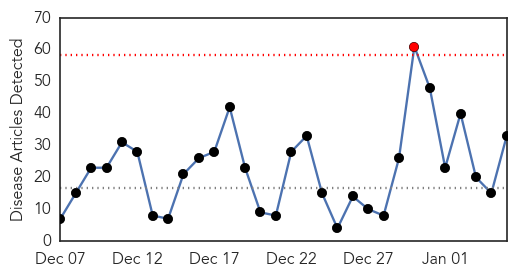
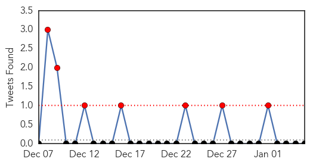

Dengue Fever
30-Day Web Trend
0 alerts, 0 warnings

30-Day Twitter Trend
0 alerts, 0 warnings

Article Locations

Article Confidences

Top Articles:
Top Tweets:
- 0.596
- Flavivirus news: Australia: Dengue outbreak confirmed in Cairns - Outbreak News Today: Australi... http://t.co/2roIWSRtye pathogenposse
Influenza
30-Day Web Trend
1 alerts, 0 warnings

30-Day Twitter Trend
7 alerts, 0 warnings

Article Locations
Article Confidences
Top Articles:
- 1.000
- Flu cases increase in Emporia
- 1.000
- Flu epidemic continues to rage with six children killed in one week
- 1.000
- Influenza season strikes early and hard
- 0.999
- Nine people died of flu-related causes in North Carolina during Christmas week
- 0.999
- Officials warn of flu outbreaks at schools
- 0.999
- Widespread flu outbreak in Connecticut
- 0.999
- Centers for Disease Control says nation's flu epidemic is getting worse
- 0.998
- Flu Season Takes Another Turn For The Worse
- 0.998
- Flu season is here — and it could get worse
- 0.998
- Flu season has arrived in NM
- 0.997
- The flu didn't take a holiday in the Carolinas
- 0.995
- Flu is in decline locally, but still dangerous
- 0.994
- Maritime Quarantine & Isolation
- 0.994
- Schools battle flu outbreak
- 0.990
- Flu on the rise in Fond du Lac, across Wisconsin
- 0.989
- 2nd Lucas County resident dies of flu-related complications
- 0.989
- Flu Spike Expected As Kids Return To School « CBS Minnesota
- 0.988
- Flu outbreak affecting more than half of Alabama's 67 counties; state still among tops nationwide
- 0.987
- Hospital tightens rules amid flu outbreak
- 0.987
- Local flu cases declining by end of 2014, but still high
- 0.985
- Feeling sick? Then stay home
- 0.979
- Influenza Widespread Across Much of United States
- 0.969
- Flu widespread in Rhode Island
- 0.960
- Doctor: Flu more common after school breaks
- 0.952
- New York City Requiring Flu Shots for Preschoolers
- 0.938
- BMC Pediatric Sickle Cell Disease Patients Achieve Near-Perfect Influenza Vaccination Rate
- 0.930
- B.C. child's death linked to enterovirus D68
- 0.913
- Trying to reduce spread of flu
- 0.911
- Flu shot may not be as effective this year, doctors still recommend it
- 0.856
- Free Flu Shots Available
- 0.803
- Avian Flu Scan for Jan 05, 2015
- 0.571
- Saint Thomas Rutherford to offer free flu shots
- 0.556
- More bird-flu cases in Washington State
Top Tweets:
-
No tweets found for Jan 05, 2015